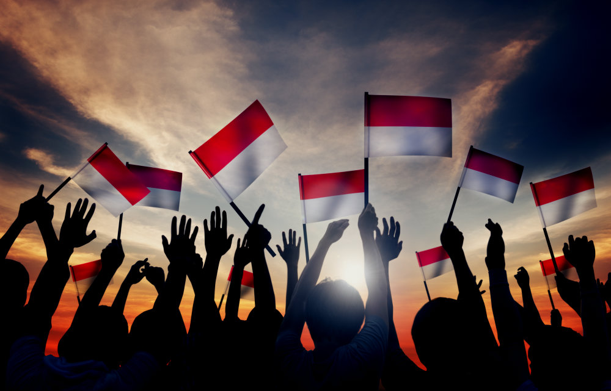

Mengenal Indonesia ku
HI saya Nurul Safitri, Mahasiswa Universitas Alma Ata Yogyakarta. Saat ini saya sedang mengikuti kegiatan Studi Independen di PT. Arkatama dengan id kegiatan saya yaitu 4762551 - FSWD 2.
Disini saya akan menyampaikan beberapa hal mengenai indonesia, terutama presiden yang pernah menjabat serta provinsi dan ibukotanya yang ada di indonesia.
Indonesia adalah sebuah negara di Asia Tenggara yang terletak antara dua benua yaitu Asia dan Australia, serta antara dua samudra yaitu Samudra Pasifik dan Samudra Hindia.
Kemerdekaan Indonesia merujuk pada tanggal 17 Agustus 1945, di mana Indonesia menyatakan kemerdekaannya dari kekuasaan kolonial Belanda setelah lebih dari 300 tahun dijajah. Deklarasi kemerdekaan dibacakan oleh Soekarno dan Mohammad Hatta, yang saat itu menjadi presiden dan wakil presiden Indonesia pertama.
Negara ini memiliki populasi lebih dari 270 juta jiwa, menjadikannya negara keempat terbesar di dunia berdasarkan jumlah penduduk.
Negara Indonesia memiliki banyak kekayaan alam, budaya, dan sejarah yang beragam. Bahasa resmi negara ini adalah Bahasa Indonesia, namun terdapat berbagai bahasa daerah dan bahasa minoritas yang digunakan di seluruh wilayah Indonesia.
Budaya Indonesia juga sangat beragam, dengan lebih dari 300 kelompok etnis yang berbeda dan ratusan bahasa daerah yang berbeda pula. Budaya Indonesia juga dipengaruhi oleh agama dan kepercayaan yang berbeda, seperti Islam, Kristen, Hindu, Buddha, dan animisme.
Negara Indonesia juga terkenal dengan keindahan alamnya, seperti gunung berapi, pantai, dan hutan hujan tropis. Beberapa tempat wisata yang terkenal di Indonesia antara lain Bali, Yogyakarta, Raja Ampat, Taman Nasional Komodo, dan Danau Toba.
Perekonomian Indonesia didasarkan pada sektor pertanian, perikanan, dan tambang. Namun, sektor manufaktur, jasa, dan pariwisata juga semakin berkembang di negara ini.
Pemerintahan Indonesia adalah republik demokrasi dengan presiden sebagai kepala negara dan pemerintahan yang dibagi ke dalam tiga cabang yaitu eksekutif, legislatif, dan yudikatif.
Pelajari Lebih Lanjut
